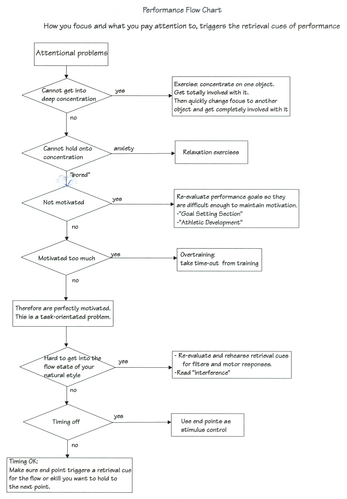
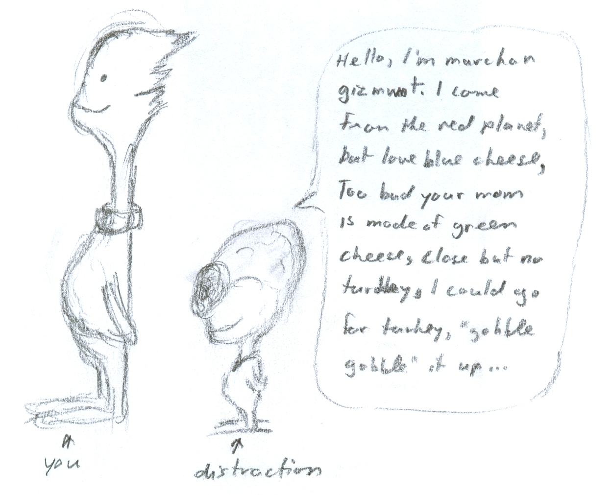

|
ch8 Self-Directed Coaching Manual
ch 8) FIXING PROBLEMS
Our performance is triggered by retrieval cues. Our retrieval cues are triggered by our attention. Attention is defined as what we focus on, and how we focus. To prepare for a good performance, we prime our brain and nervous system using rehearsal techniques defined earlier. To actually execute what we rehearsed in our mind, we need to trigger our retrieval cues by using proper attention techniques. Often in sport, we attempt to do a skill that is solid, but this time we cannot. Biologically, this means that the skill is learned in the nervous system, but is not being recalled properly. Something was working, but it is now broken, so we need to fix it. I call these retrospective interventions. (“retro” means back. “spective” means look. “intervention” means change.) We find answers by looking back to find what to change to fix the problem.
FIXING PROBLEMS WITH PERFORMANCE Recall,that it is what we pay attention too and how we focus, that trigger our performance retrieval cues. Therefore, being perfectly primed does not guarantee good performance. However, being perfectly primed along with proper attention cues does, almost certainly does. Recall, that the basic skill of focusing can be defined as the ability to be concentrated on one object and then quickly be able to change the focus and concentration on another object. Most elite athletes have good focusing abilities, however we can often lose focus none-the-less. We could lose our attention because we are bored. Our reactions have become automatic requiring less attention, or opponents are not challenging enough. Many sport psychologists suggest that goal setting should be re-evaluated so that performance goals are set that are difficult enough to maintain motivation. But often we are adequately challenged and motivated, but still loose focus. Sometimes attention cues need to be redefined while performing to ensure that attention is maintained. This has to do with the task itself, and not motivation. Figure 8-1, "Performance Flow Chart" asks a series of questions to help us decide what attention problems are attributing to a weak performance. It is assumed that we are perfectly primed for the performance. Now I will walk through the performance flowchart in figure 8-1. All we do is start at the top, and make our way down following the arrows. It asks questions in the following order: attentional problems, motivational problems, retrieval problems, timing problems. So lets start at the top with attentional problems. If we cannot get into deep concentration, then we can practice some attentional exercises. If we cannot hold onto our concentration, then if it is anxiety, relaxation exercises can control that. Otherwise, difficulty in concentration could have to do with motivation. If we are not motivated, then we re-evaluate performance goals so they are appropriate to keep us motivated. However, we may be motivated too much, caused by overtraining. A simple time-out from training can fix this. If none of the above seem to be an issue, then we can examine the sport task itself. If it is hard to get into our natural flow style, we re-examine our retrieval cues for filters and motor responses. Interference can also be the problem. I discuss this next. If our timing is off, we can use end points as stimulus control to get it accurate again. If timing is ok, but still not performing right, check that the retrieval cue triggered at the end point is correct. This flowchart is a series of questions that can help us get started in our self-coaching. It is an example, and I encourage everyone to make their own more accurate ones. For example, I could extend this flowchart further to include fixing a specific movement that is not working. We would take the movement apart, like we do when first learning or in pre-season, and just try specific parts of the movement. Get it to flow, and then build it back up again. Figure 8-1: Performance Flow Chart 
INTERFERENCE Interference is when two or more automatic skill sets are working at the same time. We feel spastic. We look spastic. We have lost our sense of self and are confused where to find it again. The more integrated our athletic style, the more prone we are to something interfering with it. The more complicated the machine, the more chance that something can go wrong. It often starts when we are exploring ways to improve. We may find ourselves attempting new styles and techniques that could interfere with our default athletic style. And the worst is the emotional nightmare of seeing all our hard work as athletes, go for nought, as absolutely nothing is working. But there is hope. And the tactic is knowledge. The more we know what interference is and how it works, the better we can get through it, or avoid it altogether. Interference can happen while learning, and it can happen in recall or performance. Consider the following 3 learning examples. The first causes interference, the second helps learning, and the third has no effect on learning. When learning a task somewhat similar to the one we already know, we get interference. If task A is driving a car, which is front steer, and task B is driving a forklift, which is rear-steer, then A interferes with learning B, and learning B interferes with A. When learning a task very similar to one we already know, A helps learning B. If task A is driving car, front steer, and task B is driving bus, front steer, then A helps learning B. When learning a task that is totally different to one we already know, there is no effect on or from our previous learning. Interference in recall and performance follows the same principles as interference in learning. So interference occurs when 2 or more very similar tasks are being retrieved at the same time. Preventing Interference In general, interference in sport is caused by comparing two or more movements or default modes that have subtle differences. When we compare something to something else, these two experiences are in their working memory at the same time. This will cause these two experiences to associate. It is anyone’s guess as to how these two experiences will start to associate. The result is usually interference. There are various precautions that we can take to avoid interference, and I will explain them with examples. The first example of interference, could be caused by our own self-coaching. We are brainstorming, trying to figure out new solutions on how to do our movements. To do this we will probably just imagine ourselves doing something new, before we actually try it. The problem is that if we start imagining ourselves doing something very similar to what our default mode is, we will get interference. To avoid this we could use a stick man in our imaginary experiments, instead of ourselves. This stick man has the same body proportions and abilities as ourselves. If we like what the stick man is doing, then we can pretend ourselves doing the same thing. We then rehearse the new movement, and then make it our new default mode. The second example of interference occurs when we compare our own movements and style to someone else’s. The automatic styles will be in working memory at the same time, causing interference. Note that comparing other athlete’s styles will not interfere, because we are visualizing their bodies doing activity, not our own. To avoid interference, we use our stick man. When exploring ideas of our own style, think or pretend that the stick man is doing the activity instead of ourselves. Then, if we like what the stick man is doing, we imagine ourselves doing the activity. The last example of interference occurs when comparing sports that are relatively similar. Specifically, comparing differences between 2 very similar tasks. Water ski trick skiing and wakeboarding are different in stance on ski/board, pull-in start trick, and landing trick, but similar in procedures. Loading, dong trick and aiming, absorbing landing. Even in same sport activity, very similar aspects should not be compared. Downhill racers can use explicit cues that trigger control, or implicit cues that trigger lightness on feet. Either one or the other should be rehearsed in the brain, but never both at the same time. To avoid interference when learning 2 very similar tasks, learn explicit control using retrieval cues of the differences between the similar tasks. In case of the similar trick skiing and wakeboarding movements, we would develop retrieval cues for stance, pull-in and landing, as those are the main differences between the two. In the case of downhill racing “feels”, we could develop retrieval cues for “control” and “lightness on feet” that are different and are learned on separate days. Get Rid of Interference Despite best intentions, we tend to experience some form of interference at some point in the many years of doing sport. When this happens, a time out is the first defense. Interference fades, as do all things in memory that are not rehearsed. When the interference fades, our default mode has a chance to come out. We could also actively develop retrieval cues for the parts that work, and ignore the stuff that does not work. If we have lost our default mode completely, it is possible to regress, using regression techniques. We try to regain memory by looking at video, pictures and other cues of our performance, or perhaps with hypnosis or other controlled regression measures, to re-experience our default mode. Then we rehearse our original retrieval cues to get the default mode to stick, or develop a whole new set of retrieval cues if things have gotten real messy. Above all, we must be good to ourselves. Be patient and loving of ourselves. Angst will only increase the amount of time spent rediscovering lost talent. Time is always the best ally, especially for well-rehearsed elite athletes. 
[end of chapter 8] SDCM home |